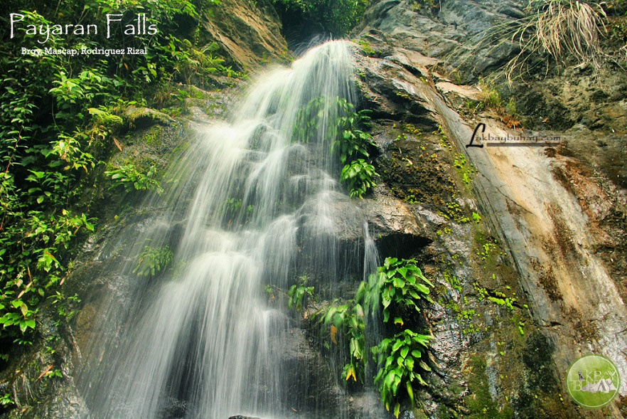
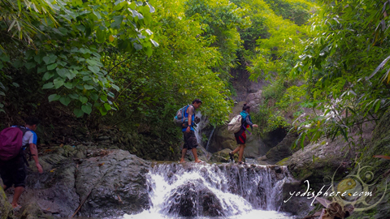
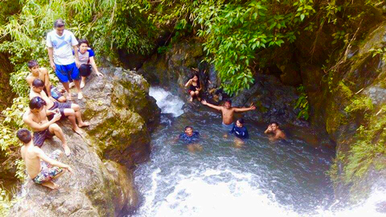
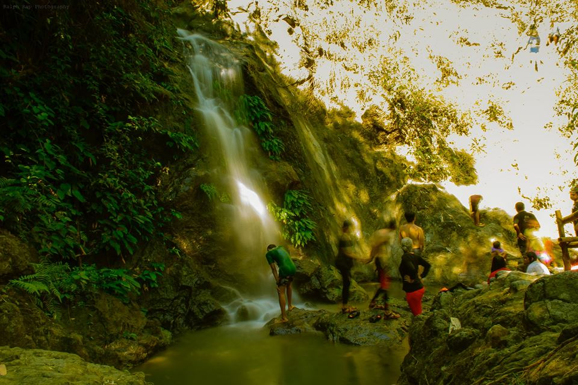

Best for: Off-the-Beaten-Path Explorers and River Trekkers.
Vibe: Wild, Hidden, and Refreshing.


Payaran Falls
A Hidden Mountain Trek to Nature’s Infinity Pools.
Payaran Falls is a hidden gem tucked deep within the mountains of Rodriguez. It features a system of seven cascading waterfalls, each offering a unique natural pool for those willing to trek through the river and forest.


